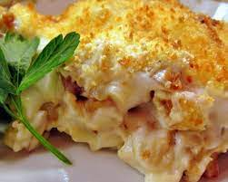

Bacalhau com Natas

Recipe description
A very good dish made in Portugal that is made of pretty much cod, potatoes
and cream.
Ingredients
- 500 g Cod (Bacalhau)
- 6 potato
- 2 onions
- 3 teeth garlic
- 200ml cream
- 200 ml Milk
- Nutmeg
- olive oil
- Pepper
- Salt
Steps
- If the cod is still not cooked, bake cod until ready, then takes the bones and skins
apart in big chunks.
- Start by cooking the potatoes I personally do not care much for the shell. But you can peel the potatoes
and bring to bake in warm water until they are good. No need to cook too because then how will the oven
may
end there is still need of a minutes to be in point.
- However in a frying pan put the onion cut into thin slices with a little olive oil
with crushed garlic cloves and let it cook until the onion browned.
After joining the cod, test and rectifies with salt and pepper.
- Joins the prepared milk and cream and a tablespoon of butter and a pinch of nutmeg and let
the sauce thicken a little,
test to see if you need to adjust, as is the taste, remove from heat.
- Strain out the potatoes and cut them into cubes and pour with the cod mixture and involves well.
Then put it on a tray or baking dish to bring to a preheated oven hot to
about 200ªC enough only for browning the top and is ready!
Voltar ao Index